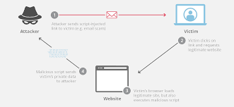

• Internet life cycle
• Submarine cable map Types of networks
• Topologies
• OSI model
• TCP/IP model
• IP address
• Subnet masking

Begin Course
Operating system & Introduction to Ethical Hacking :
• BIOS
• Functions of BIOS
• Architectures of OS
• Who is a Hacker
• Skills of a Hacker
• Types of Hackers
• Reasons for Hacking
• Who are at the risk of Hacking attacks
• Effects of Computer Hacking on an organization
• The Security, Functionality & Usability Triangle
• What is Ethical Hacking
• Why Ethical Hacking is Necessary
• What is Foot Printing
• Objectives of Foot Printing
• Finding a company’s details
• Finding a company’s domain name
• Finding a company’s Internal URLs
• Finding a company’s Server details
• Finding the details of domain registration
• Finding the range of IP Address
• Finding the DNS information
• Finding the location of servers
• Traceroute analysis
• Tracking e-mail communications
• What is network scanning
• Objectives of network scanning
• Finding the live hosts in a network
• SNMP Enumeration
• SMTP Enumeration
• DNS Enumeration
• Finding open ports on a server
• Finding the services on a server
• OS fingerprinting Server Banner grabbing tools
• What is a Vulnerability Scanning
• How does proxy server work
• Why do hackers use proxy servers
• What is a TOR network
• Why hackers prefer to use TOR networks
• What is a web server
• Different webserver applications in use
• Why are webservers hacked & its consequences
• Directory traversal attacks
• Website defacement
• Website password brute forcing
Persistent XSS, where the malicious
input originates from the website's database. Reflected XSS,
where the malicious DOMbased XSS, originates from the
victim's request. where the vulnerability is in the clientside
code rather than the serverside code.

• What is SQL Injection Effects of SQL Injection attacks
• Types of SQL Injection attacks
• SQL Injection detection tools What is session hijacking
• Dangers of session hijacking attacks
• Session hijacking techinques
• How to defend against session hijacking
• What is a DoS attack
• What is a DDoS attack
• Symptoms of a Dos attack
• DoS attack techniques
• What is a Botnet
• What is Phishing
• How Phishing website is hosted
• How victims are tricked to access
Phishing websites
• How to differentiate a Phishing webpage
from the original webpage
• How to defend against Phishing attacks
• Homograph attack